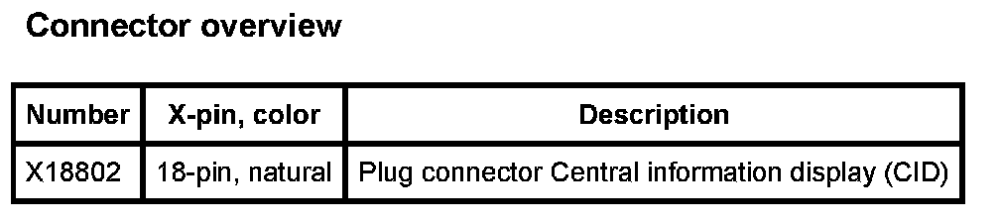

Operation CHARM
: Car repair manuals for everyone.
Home
>>
BMW
>>
2007
>>
X3 3.0si (E83) L6-3.0L (N52K)
>>
Repair and Diagnosis
>>
Accessories and Optional Equipment
>>
Driver/Vehicle Information Display
>>
Diagrams
Driver/Vehicle Information Display: Diagrams
A196 Central Information Display (CID):
